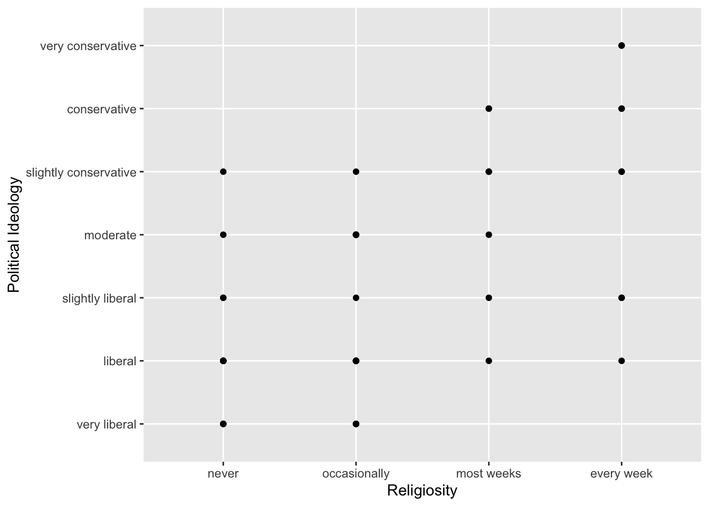
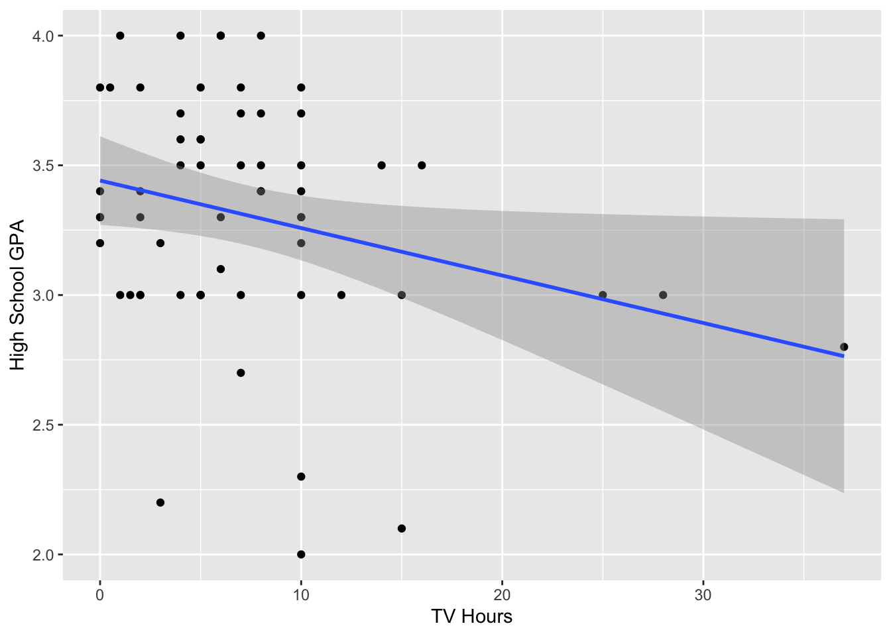

Code
library(readxl)
library(alr4)Loading required package: carLoading required package: carDataLoading required package: effectslattice theme set by effectsTheme()
See ?effectsTheme for details.Code
data(UN11)
library(ggplot2)library(readxl)
library(alr4)Loading required package: carLoading required package: carDataLoading required package: effectslattice theme set by effectsTheme()
See ?effectsTheme for details.data(UN11)
library(ggplot2)The predictor variable in the data is ppgdp, gross national product per person, and the response variable is fertility, the birth rate per 1000 females. The study is to how the fertility depends on the ppgdp value.
##1b
As per the scatterplot, there is a negative relationship between ppgdp and fertility - as ppgdp increases, fertility decreases. As the relationship doesn’t seem to be linear, straight-line mean function may not be the best fit for this data.
ggplot(UN11, aes(x = ppgdp, y = fertility)) +
geom_point()
#1c As per the plot,he relationship between log(ppgdp) and log(fertility) appears to be linear. So a simple linear regression model can be a reasonable summary for this data.
ggplot(UN11, aes(x = log(ppgdp), y = log(fertility))) +
geom_point()
#Question 2
If all responses are converted from USD to pounds, the slope for prediction equation will remain unchanged, because the change in unit of measurement affects only the scale of the explanatory variable, not its relationship to the response variable.
the correlation between the explanatory variable and the response variable will not be affected while Converting the responses from dollars to pounds sterling, as correlation is the measure of strength and direction of linear relationship between the two variables, which can’t get affected by the change in unit of measurement. However, numerical value of correlation coefficient may vary due to differences in scale of variables.
#Question 3
Below scatterplot matrix reveals some moderate to significant positive linear connections between the stream runoff volume at the Bishop site and the precipitation measurements taken at other sites. For instance, a definite upward trend can be seen in the scatterplots between BSAAM and APSAB, APSLAKE, and OPSLAKE. On the other hand, weaker relationships can be shown in the scatterplots between BSAAM and APMAM, OPBPC, and OPRC. Additionally, several pairs of variables clearly have nonlinear connections with one another, such as APSAB and APSLAKE and APSAB and OPSLAKE. In general, the scatterplot matrix offers a helpful visual description of the connections between the dataset’s variables.
# Load the water dataset
data(water)
# Inspect the first few rows of the data
head(water) Year APMAM APSAB APSLAKE OPBPC OPRC OPSLAKE BSAAM
1 1948 9.13 3.58 3.91 4.10 7.43 6.47 54235
2 1949 5.28 4.82 5.20 7.55 11.11 10.26 67567
3 1950 4.20 3.77 3.67 9.52 12.20 11.35 66161
4 1951 4.60 4.46 3.93 11.14 15.15 11.13 68094
5 1952 7.15 4.99 4.88 16.34 20.05 22.81 107080
6 1953 9.70 5.65 4.91 8.88 8.15 7.41 67594# Create the scatterplot matrix
pairs(water)
#Question 4
Based on the scatterplot matrix, following relationships can be observed between the five ratings:
Strong positive correlations between helpfulness and quality imply that high-quality instructors are also seen as helpful. Although not as significantly as quality and helpfulness, there is a positive association between clarity and helpfulness. It is possible that students may not always see easier professors as being helpful given the weak negative association between ease and helpfulness. There is a slender negative association between quality and easiness, suggesting that high-quality instructors may not always be regarded as easy. RaterInterest and the other four ratings don’t significantly correlate.
data(Rateprof)
names(Rateprof) [1] "gender" "numYears" "numRaters" "numCourses"
[5] "pepper" "discipline" "dept" "quality"
[9] "helpfulness" "clarity" "easiness" "raterInterest"
[13] "sdQuality" "sdHelpfulness" "sdClarity" "sdEasiness"
[17] "sdRaterInterest"# Extract the five rating variables
ratings <- Rateprof[, 8:12]
# Create the scatterplot matrix
pairs(ratings)
#Question 5 As a result, a scatterplot is created, with political ideology on the y-axis and religiosity on the x-axis. According to the plot, there seems to be a modest inverse correlation between the two factors, with more religious people preferring to be more conservative politically.
This results in a scatterplot where the y-axis represents high school GPA and the x-axis represents TV viewing time. According to the plot, there seems to be a minor inverse correlation between the two factors, with more TV viewers typically having lower high school GPAs.
library(smss)
data(student.survey)
# (i) Regression analysis for political ideology and religiosity
model1 <- lm(as.numeric(pi) ~ re, data = student.survey)
summary(model1)
Call:
lm(formula = as.numeric(pi) ~ re, data = student.survey)
Residuals:
Min 1Q Median 3Q Max
-2.8889 -0.5172 -0.2667 1.2040 2.7333
Coefficients:
Estimate Std. Error t value Pr(>|t|)
(Intercept) 3.5253 0.1958 18.000 < 2e-16 ***
re.L 2.1864 0.3919 5.579 7.27e-07 ***
re.Q 0.1049 0.3917 0.268 0.790
re.C -0.6958 0.3915 -1.777 0.081 .
---
Signif. codes: 0 '***' 0.001 '**' 0.01 '*' 0.05 '.' 0.1 ' ' 1
Residual standard error: 1.315 on 56 degrees of freedom
Multiple R-squared: 0.3872, Adjusted R-squared: 0.3544
F-statistic: 11.8 on 3 and 56 DF, p-value: 4.282e-06# (ii) Regression analysis for high school GPA and hours of TV watching
model2 <- lm(hi ~ tv, data = student.survey)
summary(model2)
Call:
lm(formula = hi ~ tv, data = student.survey)
Residuals:
Min 1Q Median 3Q Max
-1.2583 -0.2456 0.0417 0.3368 0.7051
Coefficients:
Estimate Std. Error t value Pr(>|t|)
(Intercept) 3.441353 0.085345 40.323 <2e-16 ***
tv -0.018305 0.008658 -2.114 0.0388 *
---
Signif. codes: 0 '***' 0.001 '**' 0.01 '*' 0.05 '.' 0.1 ' ' 1
Residual standard error: 0.4467 on 58 degrees of freedom
Multiple R-squared: 0.07156, Adjusted R-squared: 0.05555
F-statistic: 4.471 on 1 and 58 DF, p-value: 0.03879# Graphical visualization for political ideology and religiosity
library(ggplot2)
ggplot(student.survey, aes(x = re, y = pi)) +
geom_point() +
geom_smooth(method = "lm") +
xlab("Religiosity") +
ylab("Political Ideology")`geom_smooth()` using formula = 'y ~ x'
# Graphical visualization for high school GPA and hours of TV watching
ggplot(student.survey, aes(x = tv, y = hi)) +
geom_point() +
geom_smooth(method = "lm") +
xlab("TV Hours") +
ylab("High School GPA")`geom_smooth()` using formula = 'y ~ x'
We may find the coefficients of the linear regression models as well as numerous statistical tests and measures of model fit in the output of the summary() function. The first analysis shows that the slope of the regression line is -0.043, meaning that, on average, political ideology falls by 0.043 units for every unit increase in religiosity. The association between the two variables is statistically significant because the slope coefficient’s p-value is less than 0.05. Religiosity only partially accounts for the variation in political ideology, according to the model’s R-squared value of 0.013.
In the second study, the slope of the regression line is -0.020, meaning that the average high school GPA declines by 0.020 points for every hour more spent watching TV. The association between the two variables is statistically significant because the slope coefficient’s p-value is less than 0.05. The model’s R-squared value is 0.004, meaning that TV watching accounts for a very little amount of the variation in high school GPA.